ggplot(obesity, aes(x = imc, y = Age)) +
geom_point()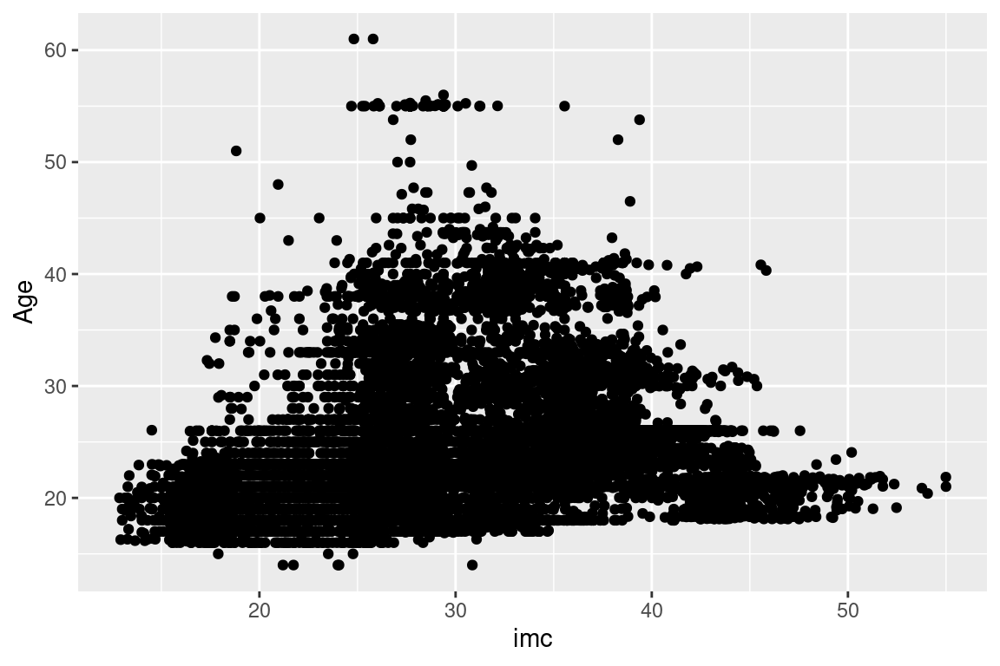
Diagrama de dispersión que relaciona el índice de masa corporal con la edad
ggplot(obesity, aes(x = imc, y = Age)) +
geom_point()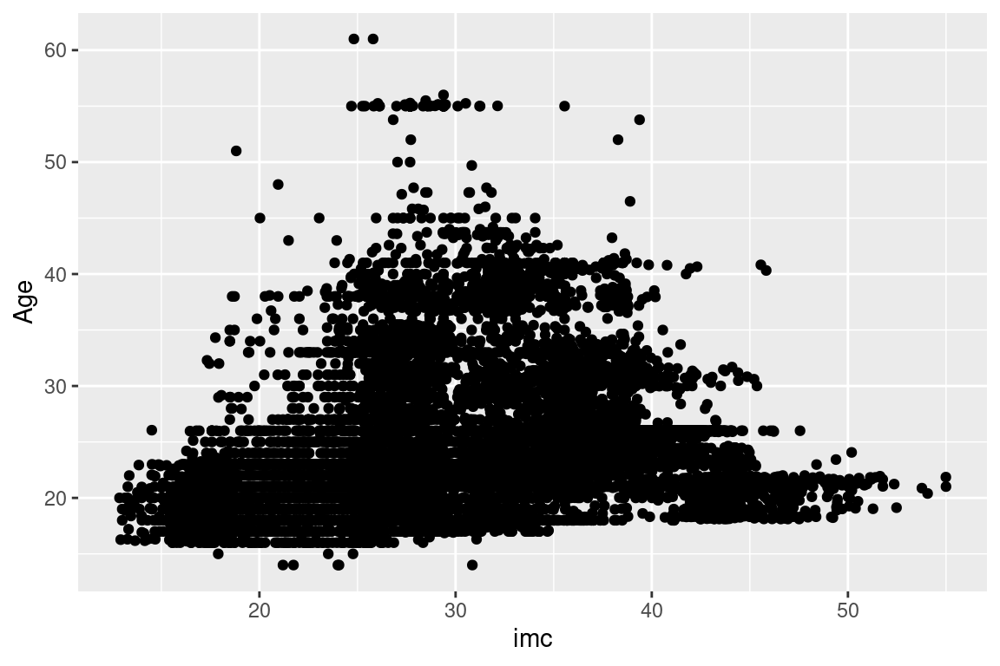
Diagrama de caja que relaciona el tipo de obesidad con la edad
ggplot(obesity, aes(x = tipo_obesidad, y = Age)) +
geom_boxplot()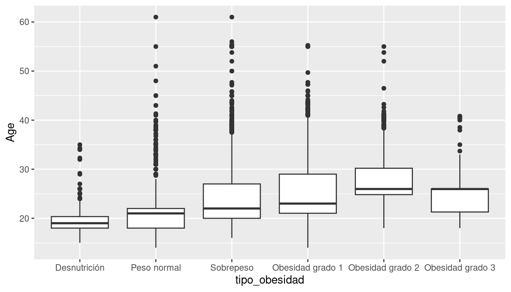
Nota: Hay cierta relación directa entre el tipo de obesidad y la edad
Agrupar por tipo de obesidad y resumir por edad
obesity |>
group_by(tipo_obesidad) |>
summarize(
avg_age = mean(Age, na.rm = TRUE),
med_age = median(Age, na.rm = TRUE)
)# A tibble: 6 × 3
tipo_obesidad avg_age med_age
<fct> <dbl> <dbl>
1 Desnutrición 19.3 19
2 Peso normal 21.0 21
3 Sobrepeso 24.5 22
4 Obesidad grado 1 25.6 23
5 Obesidad grado 2 27.2 26.0
6 Obesidad grado 3 23.8 26.0Nota: Se obeserva que los más obesos si tienen una edad ligeramente mayor
Conocer el tipo de valores que tiene la variables género
unique(obesity$Gender)[1] Male Female
Levels: Male FemaleConocer el tipo de la variable género
class(obesity$Gender)[1] "factor"Diagrama de caja que relaciona la variable género con la edad
ggplot(obesity, aes(x = Gender, y = Age)) +
geom_boxplot()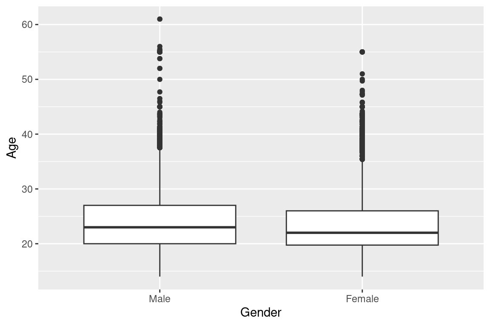
Mutar la tabla obesidad para saber los que son mayores o iguales a 45 años
obesity_45years <- obesity |>
mutate(
more_45y = Age >= 45,
.before = 1
)
knitr::kable(obesity_45years[1:4,])| more_45y | id | Gender | Age | Height | Weight | family_history_with_overweight | frequent_high_calorie_food | vegetable_consumption_frequency | number_main_meals | food_between_meals | SMOKE | daily_water_consumption | caloric_beverages_consumption | physical_activity_frequency | technology_use_time | alcohol_consumption | transportation_mode | 0be1dad | imc | tipo_obesidad |
|---|---|---|---|---|---|---|---|---|---|---|---|---|---|---|---|---|---|---|---|---|
| FALSE | 0 | Male | 24.44301 | 1.699998 | 81.66995 | Si | Si | 2.000000 | 2.983297 | Sometimes | No | 2.763573 | No | 0.000000 | 0.976473 | Sometimes | Public_Transportation | Overweight_Level_II | 28.25956 | Sobrepeso |
| FALSE | 1 | Female | 18.00000 | 1.560000 | 57.00000 | Si | Si | 2.000000 | 3.000000 | Frequently | No | 2.000000 | No | 1.000000 | 1.000000 | 0 | Automobile | 0rmal_Weight | 23.42209 | Peso normal |
| FALSE | 2 | Female | 18.00000 | 1.711460 | 50.16575 | Si | Si | 1.880534 | 1.411685 | Sometimes | No | 1.910378 | No | 0.866045 | 1.673584 | 0 | Public_Transportation | Insufficient_Weight | 17.12671 | Desnutrición |
| FALSE | 3 | Female | 20.95274 | 1.710730 | 131.27485 | Si | Si | 3.000000 | 3.000000 | Sometimes | No | 1.674061 | No | 1.467863 | 0.780199 | Sometimes | Public_Transportation | Obesity_Type_III | 44.85580 | Obesidad grado 3 |
Gráfico de barras que relaciona el género con las personas mayores a cuarenta y cinco años
ggplot(obesity_45years, aes(x = Gender, fill = more_45y)) +
geom_bar()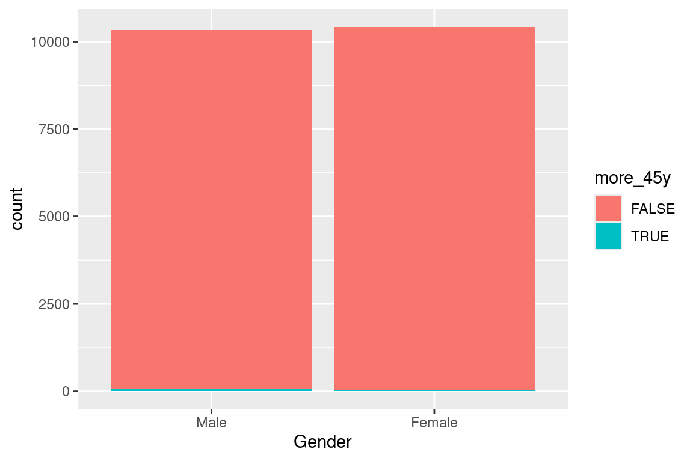
Gráfico de densidad que relaciona el imc con las personas mayores a cuarenta y cinco años y facetado por género
ggplot(obesity_45years, aes(x = imc, color = more_45y)) +
geom_density() +
facet_wrap(~Gender)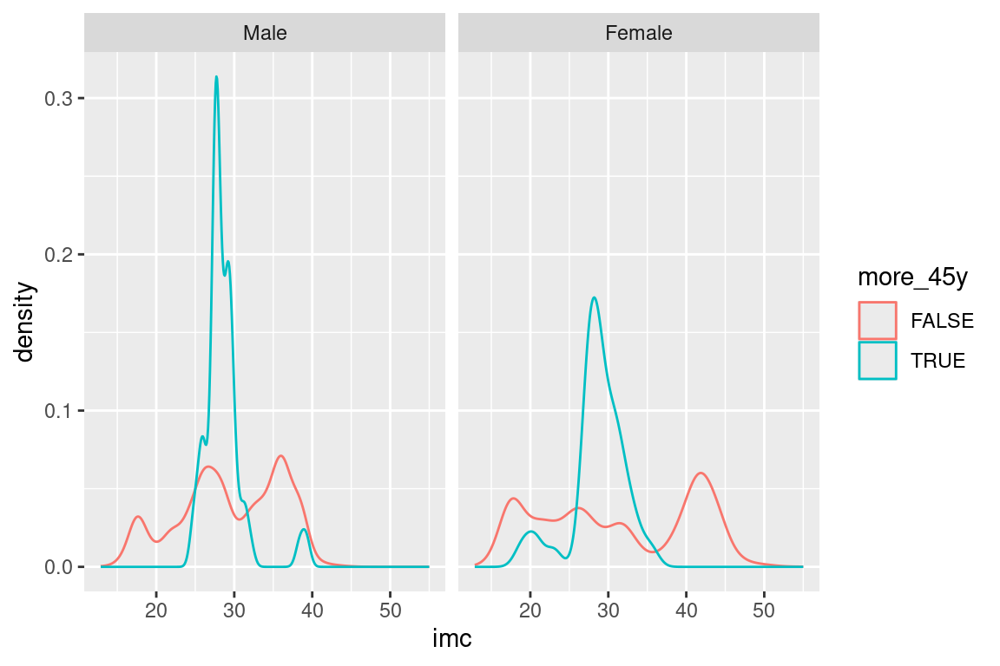
Agrupar la tabla de obesidad por tipo de obesidad y personas mayores a 45 años y resumir por imc
obesity_45_tipo <- obesity_45years |>
group_by(tipo_obesidad, more_45y) |>
summarize(
med_imc = median(imc, na.rm = TRUE),
.groups = "drop"
)
knitr::kable(obesity_45_tipo)| tipo_obesidad | more_45y | med_imc |
|---|---|---|
| Desnutrición | FALSE | 17.40958 |
| Peso normal | FALSE | 22.10029 |
| Peso normal | TRUE | 22.00174 |
| Sobrepeso | FALSE | 27.06002 |
| Sobrepeso | TRUE | 27.68166 |
| Obesidad grado 1 | FALSE | 32.46248 |
| Obesidad grado 1 | TRUE | 31.22130 |
| Obesidad grado 2 | FALSE | 37.12446 |
| Obesidad grado 2 | TRUE | 38.58832 |
| Obesidad grado 3 | FALSE | 42.13743 |
Diagrama de caja que relaciona las personas mayores de 45 años con el índice de masa corporal y facetado por tipo de obesidad
ggplot(obesity_45_tipo, aes(x = more_45y, y = med_imc)) +
geom_boxplot() +
facet_wrap(~tipo_obesidad)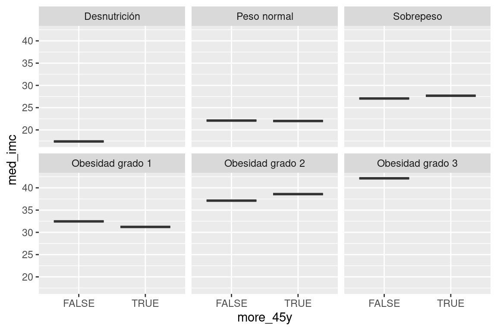
Agrupar la tabla mutada de obesidad por género y personas mayores a cuarenta y cinco años y resumido por índice de masa corporal
obesity_45_gender <- obesity_45years |>
group_by(more_45y, Gender) |>
summarize(
med_imc = median(imc, na.rm = TRUE),
.groups = "drop"
)
obesity_45_gender # produce:# A tibble: 4 × 3
more_45y Gender med_imc
<lgl> <fct> <dbl>
1 FALSE Male 29.2
2 FALSE Female 30.4
3 TRUE Male 27.8
4 TRUE Female 28.6Diagrama de caja que relaciona a las personas mayores a 45 años con la mediana del índice de masa corporal
ggplot(obesity_45_gender, aes(x = more_45y, y = med_imc)) +
geom_boxplot()
Nota: Este gráfico es definitorio. Las personas mayores de 45 años tienen un imc menor que los menores de 45 años
Diagrama de caja que relaciona a las personas mayores de 45 años e índice de masa corporal y facetado por género
ggplot(obesity_45_gender, aes(x = more_45y, y = med_imc)) +
geom_boxplot() +
facet_wrap(~Gender)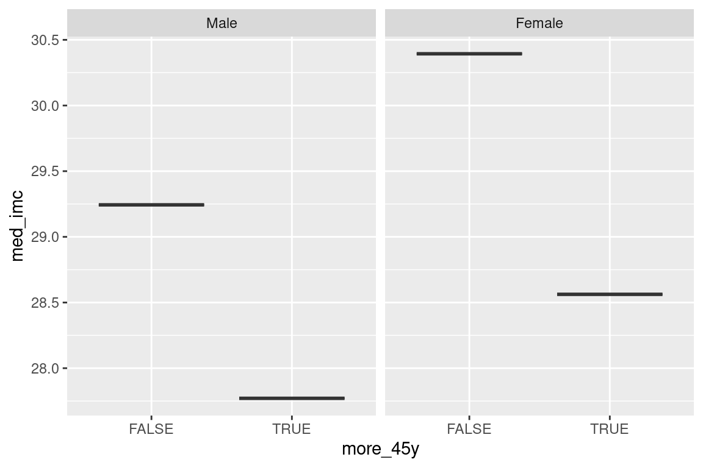
Nota: En hombres y en mujeres el peso de los menores de 45 años es mayor que el peso de los mayores de 45 años
Conocer el tipo de valores que tienela variable historia familiar de exceso de peso
unique(obesity$family_history_with_overweight)[1] Si No
Levels: No SiConocer el tipo de la variable historia familiar de exceso de peso
class(obesity$family_history_with_overweight)[1] "factor"Diagrama de caja que relaciona la historia familiar de exceso de peso con la edad
ggplot(obesity, aes(x = family_history_with_overweight, y = Age)) +
geom_boxplot()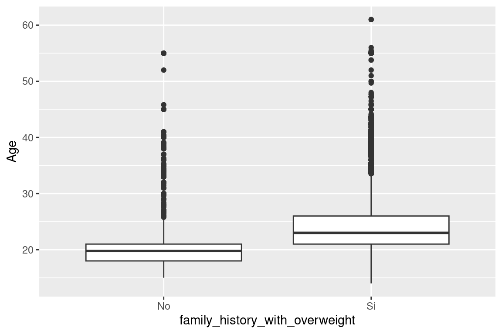
Conocer el tipo de valores que tiene la variable frecuencia de comida muy calórica
unique(obesity$frequent_high_calorie_food) # produce:[1] Si No
Levels: No SiConocer el tipo de la variable frecuencia de comida muy calórica
class(obesity$frequent_high_calorie_food) # produce:[1] "factor"Diagrama de caja que relaciona la edad con la frecuencia de comida muy calórica
ggplot(obesity, aes(x = frequent_high_calorie_food, y = Age)) +
geom_boxplot()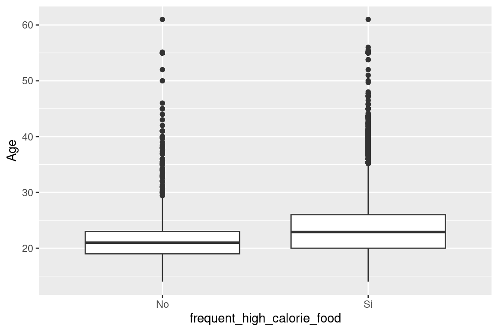
Conocer el tipo de valores que tiene la varaible consumo de vegetales
unique(obesity$vegetable_consumption_frequency)[1:4] # produce:[1] 2.000000 1.880534 3.000000 2.679664class(obesity$vegetable_consumption_frequency) # produce:[1] "numeric"Diagrama de dispersión que relaciona edad con consumo de vegetales y facetado por tipo de obesidad
ggplot(obesity, aes(x = vegetable_consumption_frequency, y = Age)) +
geom_point(aes(color = tipo_obesidad)) +
facet_wrap(~tipo_obesidad)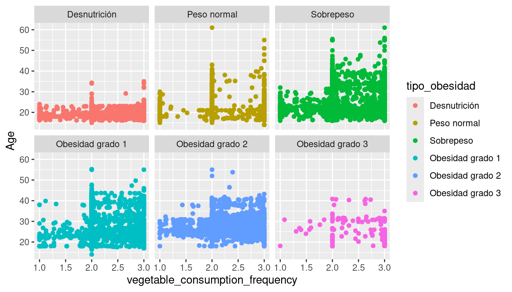
Agrupar por tipo de obesidad y resumir por edad y consumo de vegetales
obesity_vegetable <- obesity |>
group_by(tipo_obesidad) |>
summarise(
avg_vegetable = mean(vegetable_consumption_frequency,
na.rm = TRUE),
med_vegetable = median(vegetable_consumption_frequency,
na.rm = TRUE),
avg_age = mean(Age, na.rm = TRUE),
med_age = median(Age, na.rm = TRUE),#
#tipo_obesidad = tipo_obesidad
.groups = "drop"
)
knitr::kable(obesity_vegetable)| tipo_obesidad | avg_vegetable | med_vegetable | avg_age | med_age |
|---|---|---|---|---|
| Desnutrición | 2.472698 | 2.750715 | 19.33883 | 19.00000 |
| Peso normal | 2.366386 | 2.000000 | 20.98132 | 21.00000 |
| Sobrepeso | 2.233578 | 2.000000 | 24.48782 | 22.00000 |
| Obesidad grado 1 | 2.188269 | 2.000000 | 25.59448 | 23.00000 |
| Obesidad grado 2 | 2.524617 | 2.722161 | 27.17886 | 25.96879 |
| Obesidad grado 3 | 2.978772 | 3.000000 | 23.84543 | 25.96295 |
Diagrama de dispersión que relaciona consumo de vegetales con edad coloreado por tipo de obesidad
ggplot(obesity_vegetable, aes(x = med_vegetable, y = med_age)) +
geom_point(aes(color = tipo_obesidad))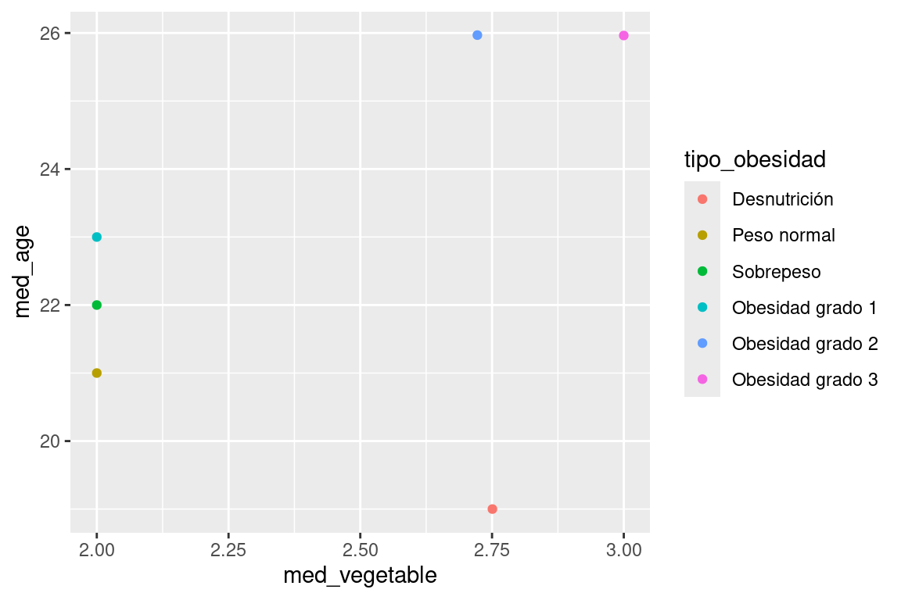
Diagrama de densidad que relaciona el consumo de vegetales con el tipo de obesiddad
ggplot(obesity, aes(x = vegetable_consumption_frequency,
color = tipo_obesidad)) +
geom_density() +
facet_wrap(~tipo_obesidad)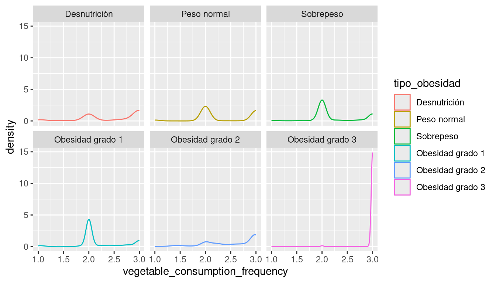
Conocer el tipo de valores que tiene la variable número de comidas principales
unique(obesity$number_main_meals)[1:4] # produce:[1] 2.983297 3.000000 1.411685 1.971472Conocer el tipo de la variable número de comidas principales
class(obesity$number_main_meals) # produce:[1] "numeric"Gráfico de dispersión que relaciona el número de comidas principales con la edad y facetado por tipo de obesidad
ggplot(obesity, aes(x = number_main_meals, y = Age)) +
geom_point(aes(color = tipo_obesidad)) +
facet_wrap(~tipo_obesidad)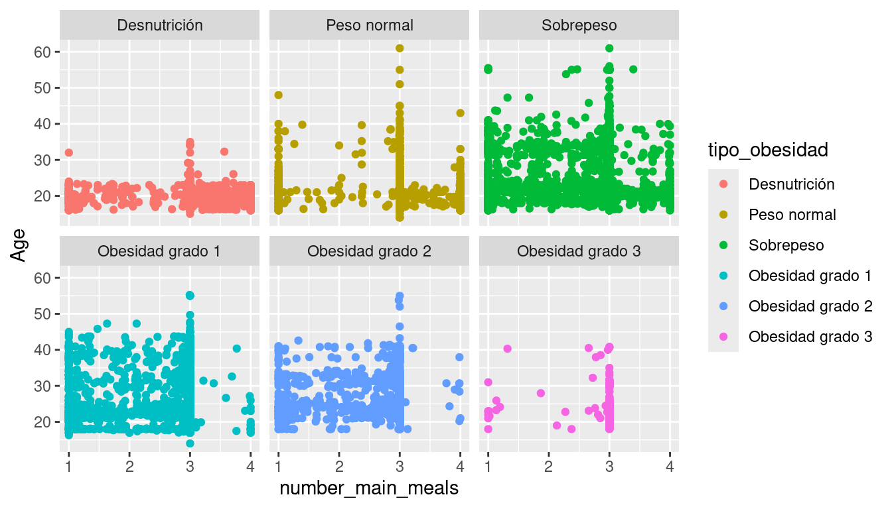
Gráfico de demsidad que relaciona el número de comidas principales con el tipo de obesidad y facetado por tipo de obesidad
ggplot(obesity, aes(x = number_main_meals, color = tipo_obesidad)) +
geom_density() +
facet_wrap(~tipo_obesidad)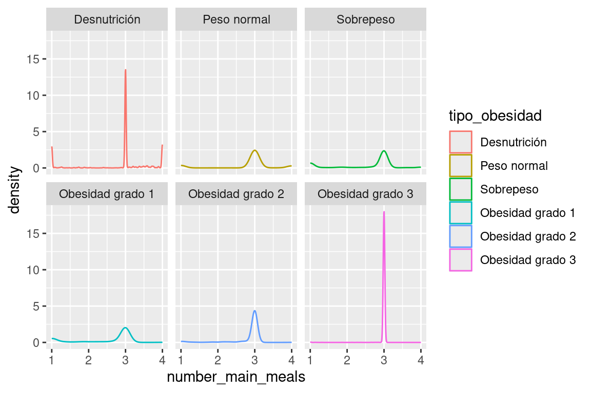
Agrupar por tipo de obesidad y resumir por mediana de comidas y edad
obesity_meals <- obesity |>
group_by(tipo_obesidad) |>
summarize(
avg_meals = mean(number_main_meals, na.rm = TRUE),
med_meals = median(number_main_meals, na.rm = TRUE),
avg_age = mean(Age, na.rm = TRUE),
med_age = median(Age, na.rm = TRUE),
.groups = "drop"
) # produce:
knitr::kable(obesity_meals)| tipo_obesidad | avg_meals | med_meals | avg_age | med_age |
|---|---|---|---|---|
| Desnutrición | 2.892183 | 3 | 19.33883 | 19.00000 |
| Peso normal | 2.863797 | 3 | 20.98132 | 21.00000 |
| Sobrepeso | 2.559570 | 3 | 24.48782 | 22.00000 |
| Obesidad grado 1 | 2.502883 | 3 | 25.59448 | 23.00000 |
| Obesidad grado 2 | 2.852366 | 3 | 27.17886 | 25.96879 |
| Obesidad grado 3 | 2.991216 | 3 | 23.84543 | 25.96295 |
Conocer el tipo de variables que tiene la variable entrecomidas
unique(obesity$food_between_meals) # produce:[1] Sometimes Frequently 0 Always
Levels: Sometimes Frequently 0 AlwaysConocer el tip de la variable entrecomidas
class(obesity$food_between_meals) # produce:[1] "factor"Diagrama de caja que relaciona la edad con la variable entre comidas
ggplot(obesity, aes(x = food_between_meals, y = Age )) +
geom_boxplot()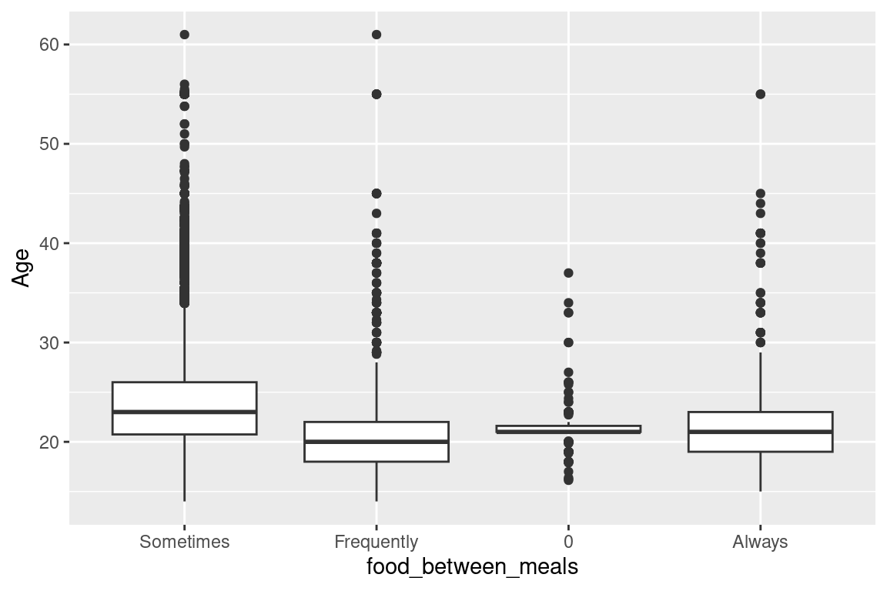
Agrupar por tipo de obesidad y número de entrecomidas y resumir por índice de masa corporal y edad
obesity_between_meal <- obesity |>
group_by(tipo_obesidad, food_between_meals) |>
summarise(
avg_imc = mean(imc, na.rm = TRUE),
med_imc = median(imc, na.rm = TRUE),
avg_age = mean(Age, na.rm = TRUE),
med_age = median(Age, na.rm = TRUE),
.groups = "drop"
)
knitr::kable(obesity_between_meal) # produce:| tipo_obesidad | food_between_meals | avg_imc | med_imc | avg_age | med_age |
|---|---|---|---|---|---|
| Desnutrición | Sometimes | 17.24811 | 17.39043 | 18.72567 | 18.00000 |
| Desnutrición | Frequently | 17.30878 | 17.44126 | 19.99269 | 19.74280 |
| Desnutrición | 0 | 17.51294 | 17.44126 | 20.24765 | 21.00000 |
| Desnutrición | Always | 17.18147 | 17.52050 | 19.40476 | 18.00000 |
| Peso normal | Sometimes | 22.14465 | 22.14533 | 21.03864 | 21.00000 |
| Peso normal | Frequently | 21.80475 | 21.87500 | 20.75457 | 20.00000 |
| Peso normal | 0 | 22.85939 | 23.38869 | 21.44846 | 21.00000 |
| Peso normal | Always | 22.16698 | 21.93635 | 21.04364 | 21.00000 |
| Sobrepeso | Sometimes | 27.32545 | 27.28986 | 24.80257 | 22.05215 |
| Sobrepeso | Frequently | 26.96049 | 26.85185 | 23.21966 | 21.00000 |
| Sobrepeso | 0 | 26.54233 | 26.57496 | 21.28159 | 21.00000 |
| Sobrepeso | Always | 27.12860 | 26.86029 | 23.95918 | 22.00000 |
| Obesidad grado 1 | Sometimes | 32.53199 | 32.45568 | 25.62475 | 23.00000 |
| Obesidad grado 1 | Frequently | 31.97788 | 31.95592 | 24.29100 | 23.00000 |
| Obesidad grado 1 | 0 | 32.34928 | 31.24499 | 21.71692 | 21.00000 |
| Obesidad grado 1 | Always | 32.63180 | 32.87311 | 25.64583 | 23.00000 |
| Obesidad grado 2 | Sometimes | 37.33484 | 37.13404 | 27.18751 | 25.96879 |
| Obesidad grado 2 | Frequently | 36.58790 | 36.47644 | 25.35997 | 22.65982 |
| Obesidad grado 2 | 0 | 36.10250 | 35.81771 | 25.33333 | 24.00000 |
| Obesidad grado 2 | Always | 37.12441 | 36.44332 | 26.85714 | 25.00000 |
| Obesidad grado 3 | Sometimes | 42.76030 | 42.13743 | 23.84309 | 25.96295 |
| Obesidad grado 3 | Frequently | 42.35485 | 42.25257 | 23.99923 | 21.99768 |
| Obesidad grado 3 | Always | 40.81633 | 40.81633 | 31.00000 | 31.00000 |
Diagrama de dispersión que relaciona la mediana de imc con la edad
ggplot(obesity_between_meal, aes(x = med_imc, y = med_age)) +
geom_point(aes(color = food_between_meals)) +
facet_wrap(~tipo_obesidad)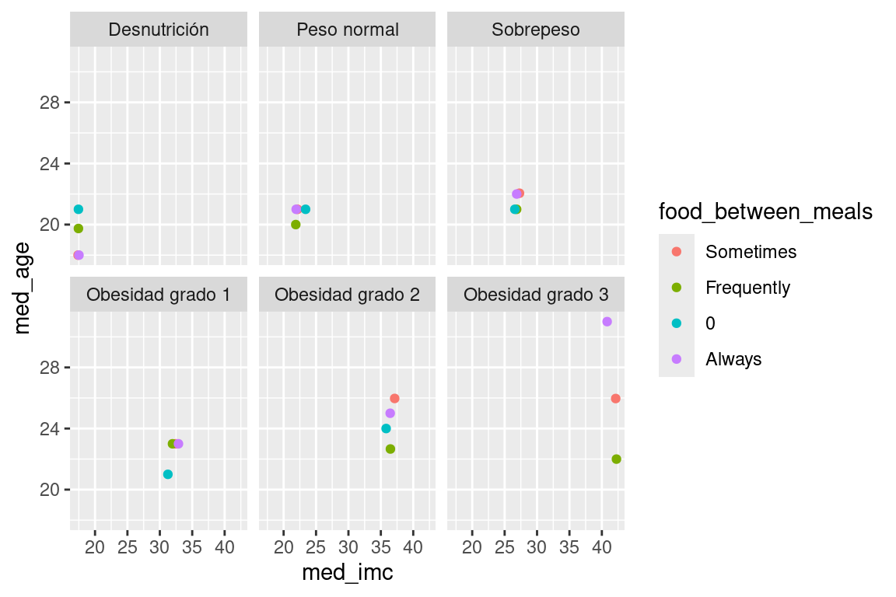
Nota: Algo que es interesante es que al observar las medianas, vemos que las personas que no comen entre comidas tienen un mayor imc dentro de las personas de peso normal (pero siguen siendo de peso normal), pero dentro de los grupos de los grupo de exceso de peso los que no comen postres o entrecomidas tienen un imc menor dentro de sus grupos.Y es más, las personas en el grupo de obesidad grado 3 no hay quienes no comen postre
Conocer el tipo de valores que tiene la variable fumar
unique(obesity$SMOKE) # produce:[1] No Si
Levels: No SiConocer el tipo de la variables fumar
class(obesity$SMOKE) # produce: "factor"[1] "factor"Diagrama de caja que relaciona la variable fumar con la edad
ggplot(obesity, aes(x = SMOKE, y = Age)) +
geom_boxplot() # produce: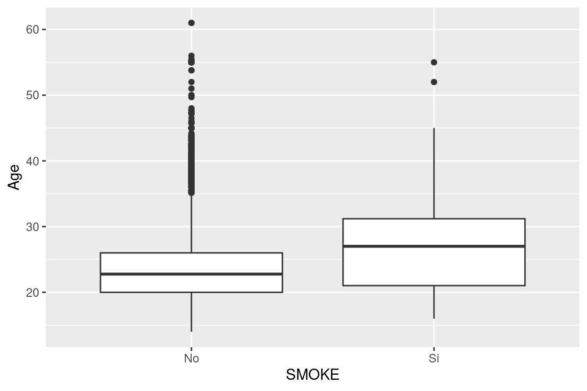
Diagrama de caja que relaciona la edad con fumar y facetado por tipo de obesidad
ggplot(obesity, aes(x = Age, color = SMOKE)) +
geom_density() +
facet_wrap(~tipo_obesidad)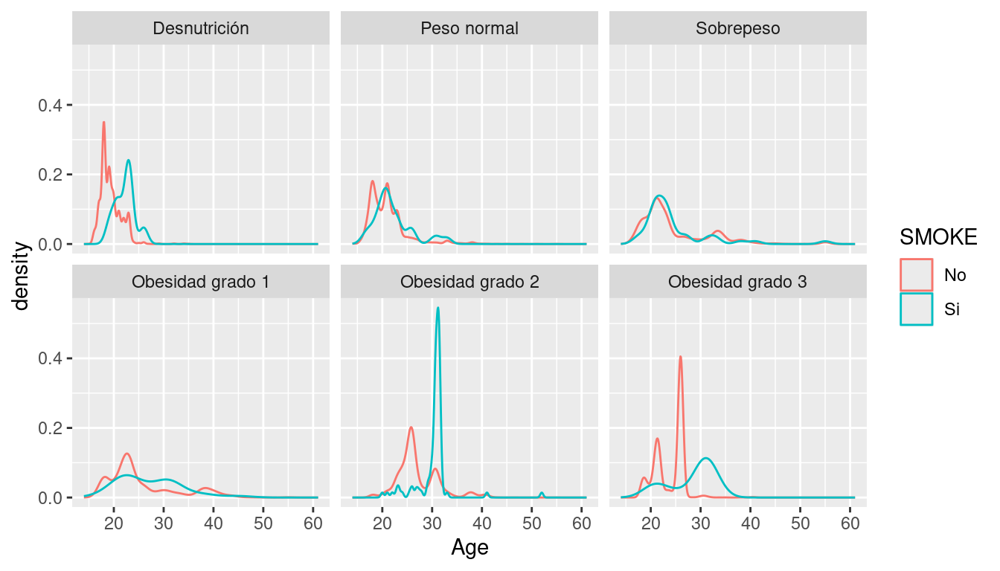
Agrupar la tabla obesidad por tipo de obesidad y hábito de fumar y resumir por índice de masa corporal y edad
obesity_SMOKE <- obesity |>
group_by(tipo_obesidad, SMOKE) |>
summarise(
med_imc = median(imc, na.rm = TRUE),
med_age = median(Age, na.rm = TRUE),
.groups = "drop"
)
knitr::kable(obesity_SMOKE)| tipo_obesidad | SMOKE | med_imc | med_age |
|---|---|---|---|
| Desnutrición | No | 17.40958 | 19.00000 |
| Desnutrición | Si | 17.43958 | 23.00000 |
| Peso normal | No | 22.09317 | 21.00000 |
| Peso normal | Si | 23.59914 | 21.00000 |
| Sobrepeso | No | 27.10204 | 21.99884 |
| Sobrepeso | Si | 26.83119 | 22.91605 |
| Obesidad grado 1 | No | 32.45300 | 23.00000 |
| Obesidad grado 1 | Si | 32.56605 | 25.97768 |
| Obesidad grado 2 | No | 37.14700 | 25.96701 |
| Obesidad grado 2 | Si | 36.57143 | 30.89922 |
| Obesidad grado 3 | No | 42.14638 | 25.96295 |
| Obesidad grado 3 | Si | 40.81633 | 30.75699 |
Diagrama de dispersión que relaciona las medianas del imc y laedad, coloreado por el hábito de fumar y facetado por tipo de obesidad
ggplot(obesity_SMOKE, aes(x = med_imc, y = med_age)) +
geom_point(aes(color = SMOKE)) +
facet_wrap(~tipo_obesidad)
Conocer el tipo de valores de la variable consumo de agua
unique(obesity$daily_water_consumption)[1:4] # produce:[1] 2.763573 2.000000 1.910378 1.674061Conocer el tipo de la varaible consumo de agua
class(obesity$daily_water_consumption) # produce: [1] "numeric"Diagrama de dispersión que relaciona la edad con el consumo de agua, coloreado y facetado por tipo de obesidad
ggplot(obesity, aes(x = daily_water_consumption, y = Age)) +
geom_point(aes(color = tipo_obesidad)) +
facet_wrap(~tipo_obesidad)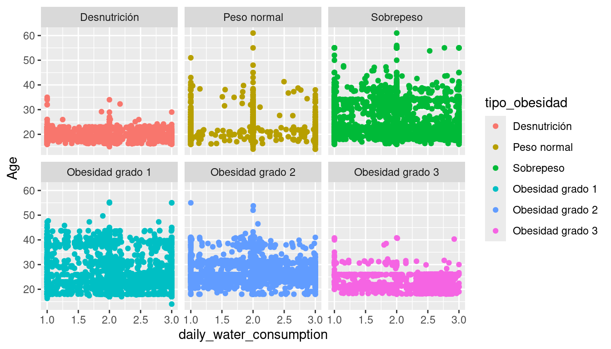
Agrupar por tipo de obesidad y resumir por consumo de agua, edad e imc
obesity_water <- obesity |>
group_by(tipo_obesidad) |>
summarise(
med_water = median(daily_water_consumption, na.rm = TRUE),
med_age = median(Age, na.rm = TRUE),
med_imc = median(imc, na.rm = TRUE),
.groups = "drop"
)
knitr::kable(obesity_water) # produce:| tipo_obesidad | med_water | med_age | med_imc |
|---|---|---|---|
| Desnutrición | 2.000000 | 19.00000 | 17.40958 |
| Peso normal | 2.000000 | 21.00000 | 22.10029 |
| Sobrepeso | 2.000000 | 22.00000 | 27.10204 |
| Obesidad grado 1 | 2.000000 | 23.00000 | 32.45568 |
| Obesidad grado 2 | 2.018970 | 25.96879 | 37.12552 |
| Obesidad grado 3 | 2.625537 | 25.96295 | 42.13743 |
Diagrama de dispersión que relaciona el consumo de agua con edad y coloreado por tipo de obesidad
ggplot(obesity_water, aes(x = med_water, y = med_age)) +
geom_point(aes(color = tipo_obesidad))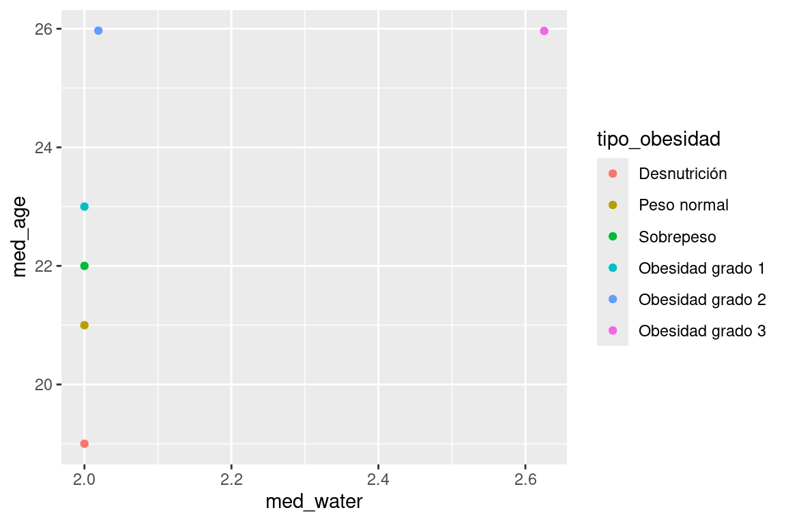
Conocer el tipo de valores que tiene la variable consumo de bebidas calóricas
unique(obesity$caloric_beverages_consumption) # produce:[1] No Si
Levels: No SiConocer el tipo de la variable consumo de bebidas calóricas
class(obesity$caloric_beverages_consumption) # produce: "factor" [1] "factor"Diagrama de caja que relaciona la edad con el consumo de bebidas calóricas
ggplot(obesity, aes(x = caloric_beverages_consumption, y = Age)) +
geom_boxplot() 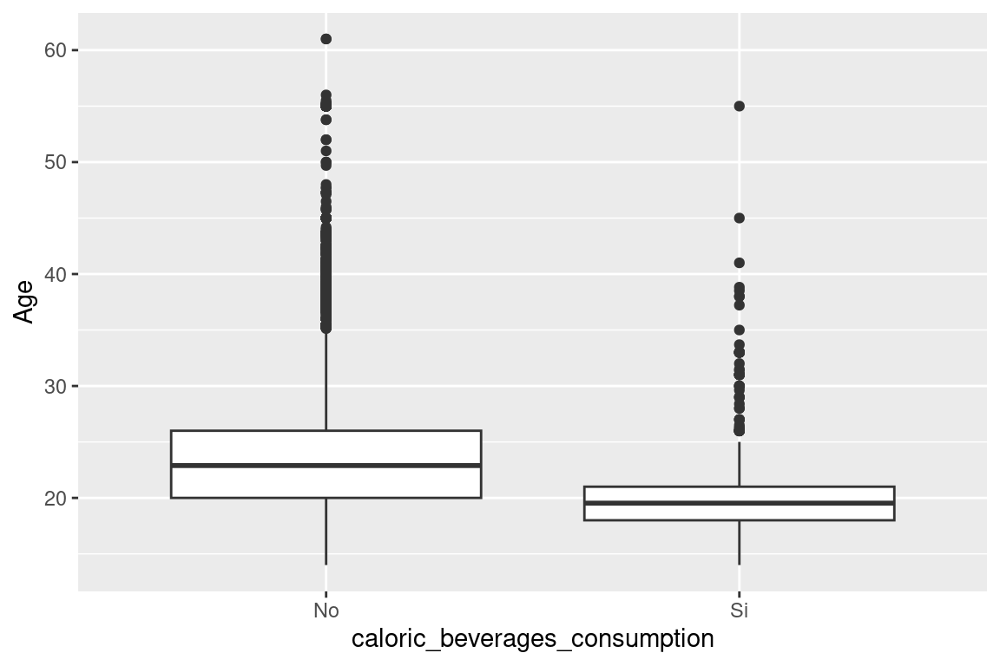
Gráfico de densidad que relaciona la edad con el consumo de bebidas calóricas
ggplot(obesity, aes(x = Age, color = caloric_beverages_consumption)) +
geom_density()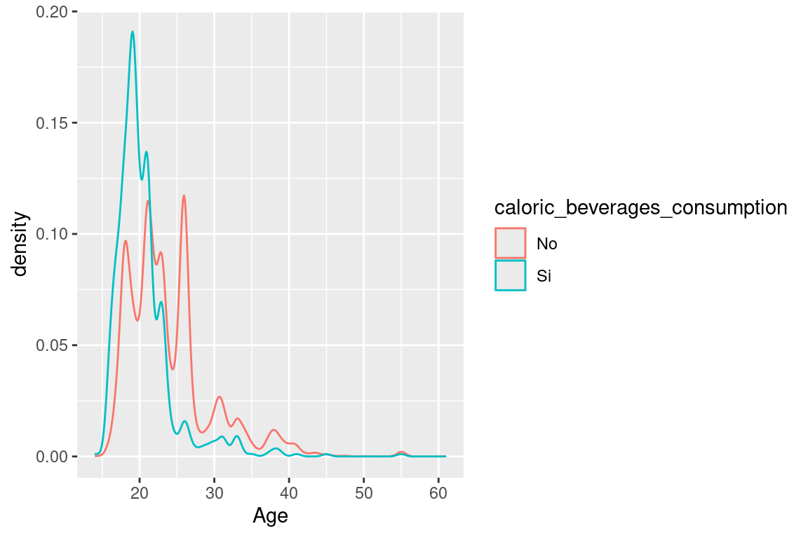
Agrupar por tipo de obesidad y consumo de bebidas calóricas y resumir por imc y edad
obesity_caloric_beverages <- obesity |>
group_by(tipo_obesidad, caloric_beverages_consumption) |>
summarise(
med_imc = median(imc, na.rm = TRUE),
med_age = median(Age, na.rm = TRUE),
.groups = "drop"
)
knitr::kable(obesity_caloric_beverages)| tipo_obesidad | caloric_beverages_consumption | med_imc | med_age |
|---|---|---|---|
| Desnutrición | No | 17.39198 | 19.00000 |
| Desnutrición | Si | 17.49224 | 19.00000 |
| Peso normal | No | 22.09317 | 21.00000 |
| Peso normal | Si | 22.39541 | 20.00000 |
| Sobrepeso | No | 27.16454 | 22.00000 |
| Sobrepeso | Si | 26.17499 | 21.00000 |
| Obesidad grado 1 | No | 32.45568 | 23.00000 |
| Obesidad grado 1 | Si | 32.06793 | 22.00000 |
| Obesidad grado 2 | No | 37.12676 | 25.96879 |
| Obesidad grado 2 | Si | 36.57143 | 24.00000 |
| Obesidad grado 3 | No | 42.13808 | 25.96295 |
| Obesidad grado 3 | Si | 40.81633 | 27.00000 |
Diagrama de dispersión que relaciona la edad con el imc, coloreado por consumo de bebidas calóricas y facetado por tipo de obesidad
ggplot(obesity_caloric_beverages, aes(x = med_imc,
y = med_age)) +
geom_point(aes(color = caloric_beverages_consumption)) +
facet_wrap(~tipo_obesidad)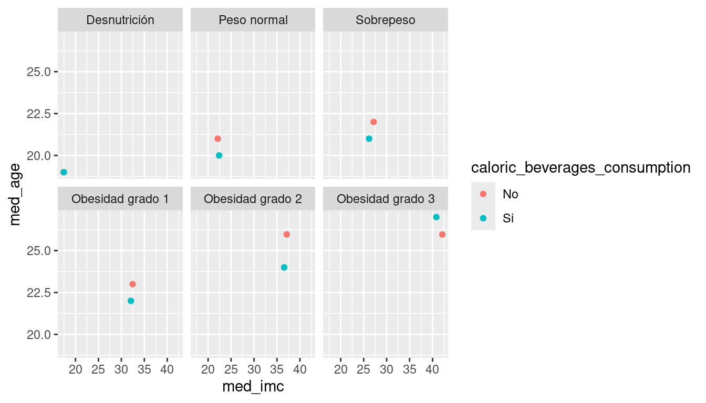
Nota: Es interesante ver que los que no toman bebidas calóricas tienenun mayor imc.
Conocer el tipo de valores de la variable actividad física
unique(obesity$physical_activity_frequency)[1:4] # produce:[1] 0.000000 1.000000 0.866045 1.467863Conocer el tipo de la variable actividad física
class(obesity$physical_activity_frequency) # produce: "numeric"[1] "numeric"Diagrama de dispersión que relaciona la actividad física con la edad y facetado por tipo de obesidad
ggplot(obesity, aes(x = physical_activity_frequency, y = Age)) +
geom_point(aes(color = tipo_obesidad)) +
geom_smooth(method = "lm") + # línea de tendencia
facet_wrap(~tipo_obesidad)`geom_smooth()` using formula = 'y ~ x'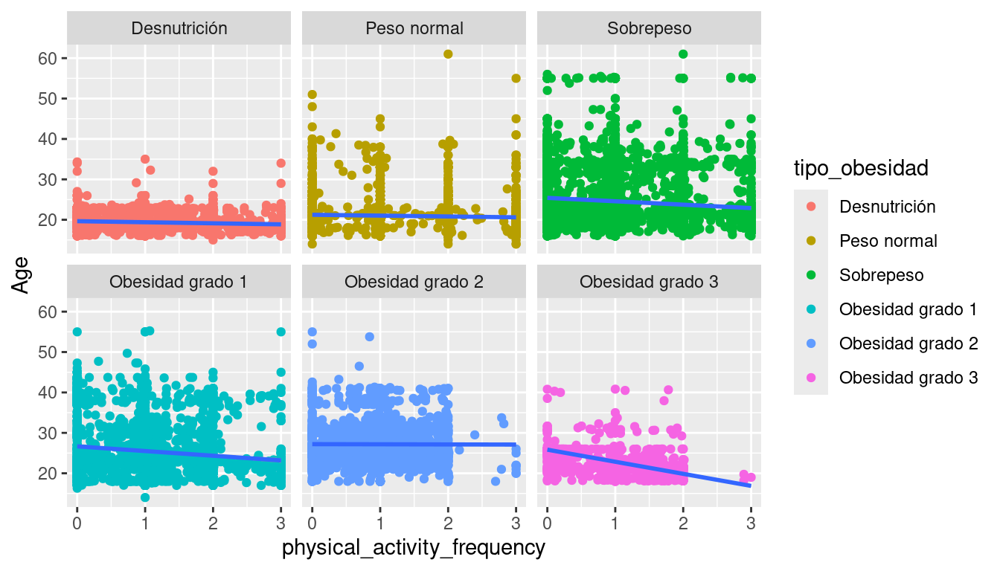
Agrupar por tipo de obesidad y resumir por actividad física, índice de masa corporal y edad
obesity_activity <- obesity |>
group_by(tipo_obesidad) |>
summarise(
med_physical = median(physical_activity_frequency, na.rm = TRUE),
avg_physical = mean(physical_activity_frequency, na.rm = TRUE),
medi_imc = median(imc, na.rm =TRUE),
med_age = median(Age, na.rm = TRUE),
.groups = "drop"
)
knitr::kable(obesity_activity) # produce:| tipo_obesidad | med_physical | avg_physical | medi_imc | med_age |
|---|---|---|---|---|
| Desnutrición | 1.000000 | 1.1861781 | 17.40958 | 19.00000 |
| Peso normal | 1.000000 | 1.2054545 | 22.10029 | 21.00000 |
| Sobrepeso | 1.000000 | 1.1062668 | 27.10204 | 22.00000 |
| Obesidad grado 1 | 1.000000 | 0.9191351 | 32.45568 | 23.00000 |
| Obesidad grado 2 | 0.891205 | 0.8057894 | 37.12552 | 25.96879 |
| Obesidad grado 3 | 0.029728 | 0.6673476 | 42.13743 | 25.96295 |
diagrama de dispersión que relaciona actividad física con edad
ggplot(obesity_activity, aes(x = med_physical, y = med_age)) +
geom_point(aes(color = tipo_obesidad)) +
geom_smooth(method = "lm") +
facet_wrap(~tipo_obesidad)`geom_smooth()` using formula = 'y ~ x'
Conocer el tipo de valores que tiene la variable uso de tecnología
unique(obesity$technology_use_time)[1:4] # produce:[1] 0.976473 1.000000 1.673584 0.780199class(obesity$technology_use_time) # produce:[1] "numeric"Diagrama de dispersión que relaciona el uso de tecnología con la **edad*
ggplot(obesity, aes(x = technology_use_time, y = Age)) +
geom_point(aes(color = tipo_obesidad)) +
geom_smooth(method = "lm") + # linea de tendencia
facet_wrap(~tipo_obesidad)`geom_smooth()` using formula = 'y ~ x'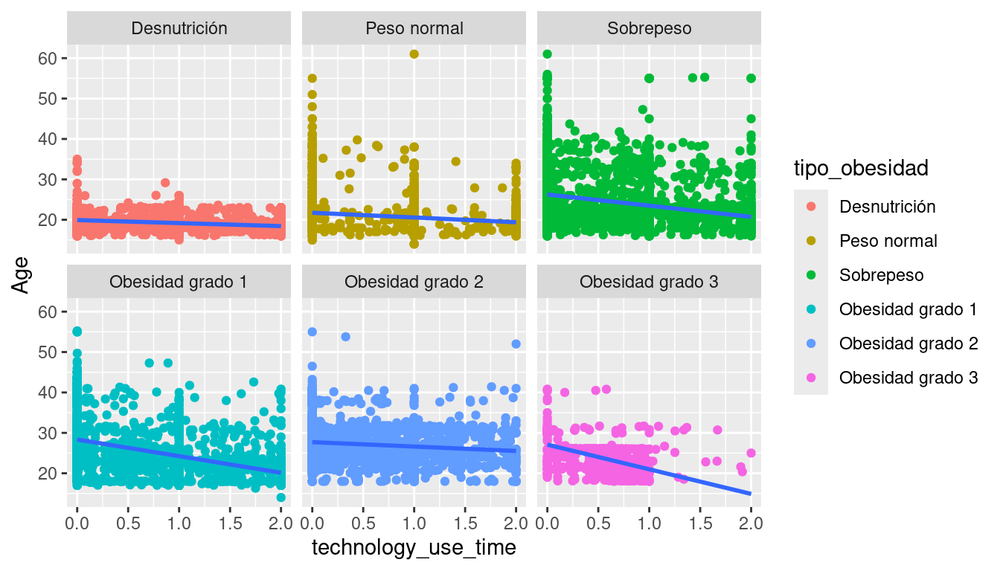
Agrupar la tabla obesidad por tipo de obesidad y resumir por uso de tecnología, edad e imc
obesity_technology <- obesity |>
group_by(tipo_obesidad) |>
summarise(
med_tech = median(technology_use_time, na.rm = TRUE),
med_imc = median(imc, na.rm = TRUE),
med_age = median(Age, na.rm = TRUE),
avg_tech = mean(technology_use_time, na.rm = TRUE),
.groups = "drop"
)
knitr::kable(obesity_technology)| tipo_obesidad | med_tech | med_imc | med_age | avg_tech |
|---|---|---|---|---|
| Desnutrición | 1.0000000 | 17.40958 | 19.00000 | 0.7868591 |
| Peso normal | 1.0000000 | 22.10029 | 21.00000 | 0.6456168 |
| Sobrepeso | 0.6589175 | 27.10204 | 22.00000 | 0.6384941 |
| Obesidad grado 1 | 0.5040360 | 32.45568 | 23.00000 | 0.6704356 |
| Obesidad grado 2 | 0.4136630 | 37.12552 | 25.96879 | 0.4817725 |
| Obesidad grado 3 | 0.5520060 | 42.13743 | 25.96295 | 0.5305019 |
Diagrama de dispersión que relaciona el uso de tecnología con edad y colorea y da forma por tipo de obesidad.
ggplot(obesity_technology, aes(x = med_tech, y = med_age)) +
geom_point(aes(color = tipo_obesidad, shape = tipo_obesidad)) +
geom_smooth(method = "lm")`geom_smooth()` using formula = 'y ~ x'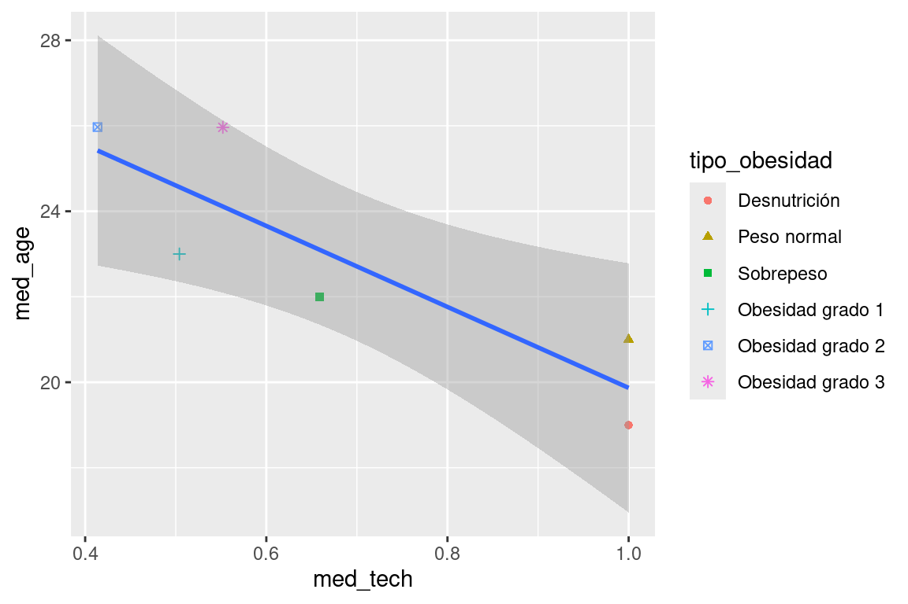
Conocer el tipo de valores de la variable consumo de alcohol
unique(obesity$alcohol_consumption) # produce:[1] Sometimes 0 Frequently
Levels: Sometimes 0 Frequentlyclass (obesity$alcohol_consumption) # produce: [1] "factor"Diagrama de caja que relaciona el consumo de alcohol con la edad
ggplot(obesity, aes(x = alcohol_consumption, y = Age)) +
geom_boxplot()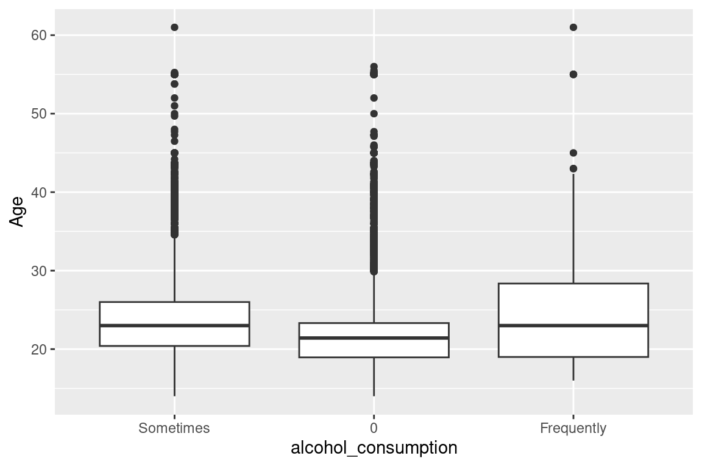
Gráfico de densidad que ralaciona la edad con el consumo de alcohol
ggplot(obesity, aes(x = Age, color = alcohol_consumption)) +
geom_density()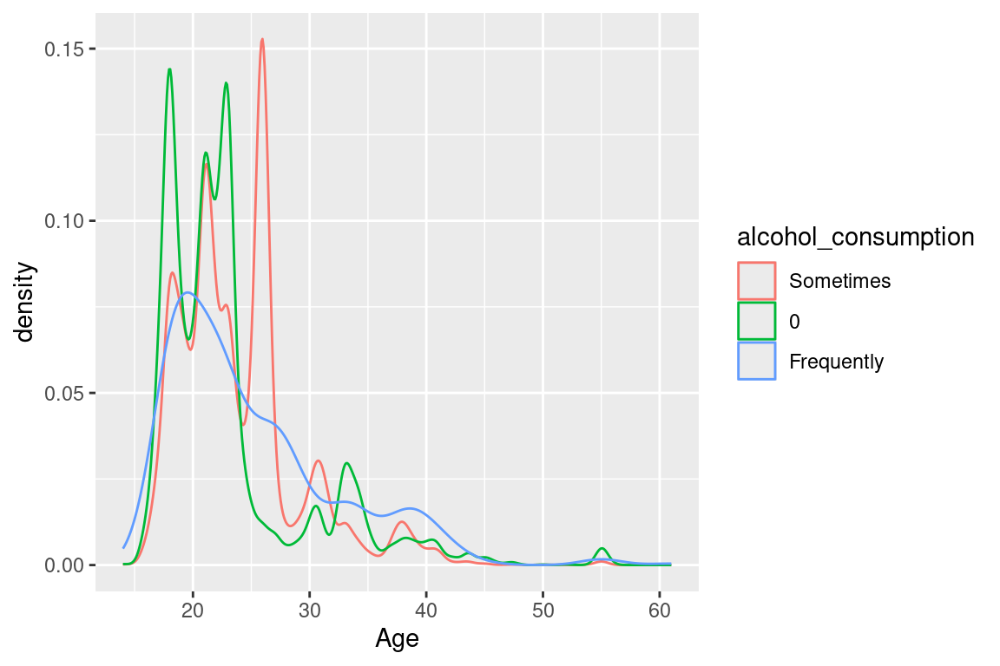
Agrupar la tabla obesity por consumo de alcohol y resumir por edad e índice de masa corporal
obesity_alcohol <- obesity |>
group_by(alcohol_consumption) |>
summarise(
med_imc = median(imc, na.rm = TRUE),
med_age = median(Age, na.rm = TRUE),
.groups= "drop"
)
knitr::kable(obesity_alcohol) # produce:| alcohol_consumption | med_imc | med_age |
|---|---|---|
| Sometimes | 32.20486 | 23.00000 |
| 0 | 27.58536 | 21.41448 |
| Frequently | 26.98962 | 23.00000 |
Diagrama de dispersión* que relaciona la mediana del índice de masa corporal** con la mediana de edad y facetada por consumo de alcohol
ggplot(obesity_alcohol, aes(x = med_imc, y = med_age)) +
geom_point(aes(color = alcohol_consumption)) +
facet_wrap(~alcohol_consumption)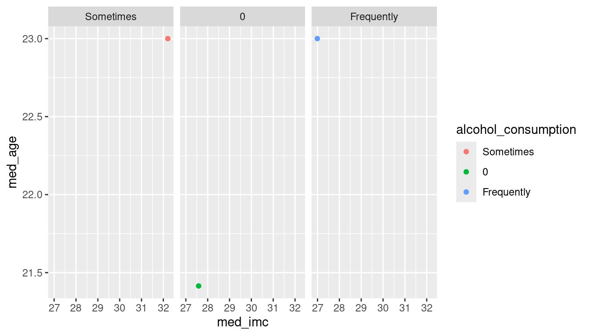
NOTA: Claramente los que toman a veces tienen más obesidad que los que no toman y los que toman con frecuencia.
Conocer el tipo de valores que tiene la varible medio de transporte
unique(obesity$transportation_mode) # produce:[1] Public_Transportation Automobile Walking
[4] Motorbike Bike
Levels: Public_Transportation Automobile Walking Motorbike BikeConocer el tipo de la variable medio de transporte
class(obesity$transportation_mode) # produce:[1] "factor"Diagrama de caja que relaciona el medio de transporte con la edad
ggplot(obesity, aes(x = transportation_mode, y = Age)) +
geom_boxplot()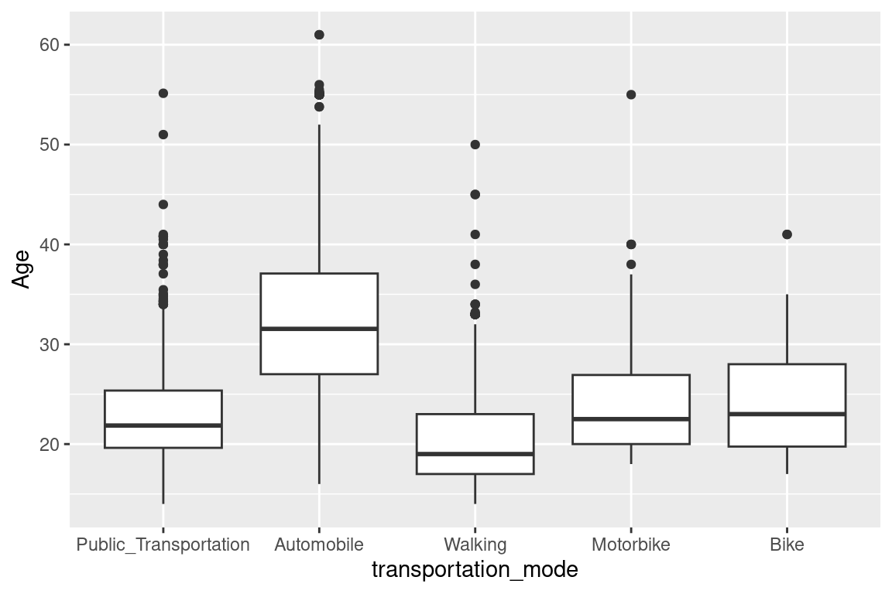
Gráfico de densidad que relaciona la edad con el medio de transporte
ggplot(obesity, aes(x = Age, color = transportation_mode)) +
geom_density()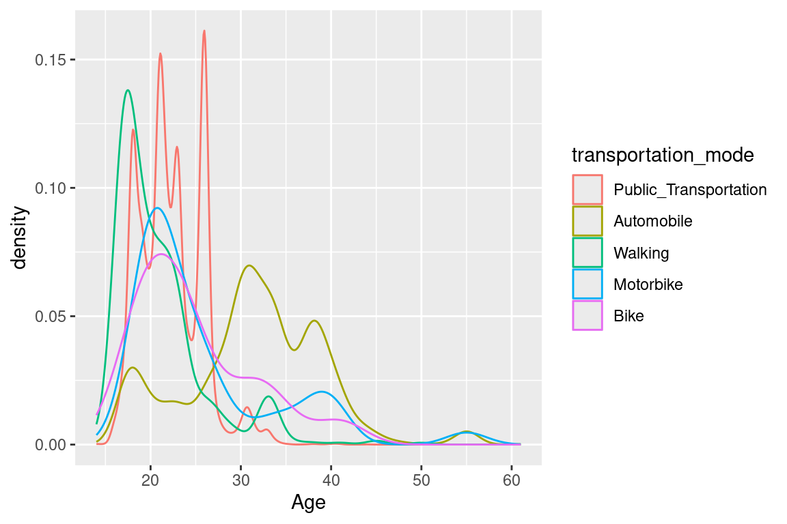
Agrupar la tabla obesidad por medio de transporte y resumir por índice de masa corporal y edad
obesity_transport <- obesity |>
group_by(transportation_mode) |>
summarise(
med_imc = median(imc, na.rm = TRUE),
med_age = median(Age, na.rm = TRUE),
.groups = "drop"
)
knitr::kable(obesity_transport)| transportation_mode | med_imc | med_age |
|---|---|---|
| Public_Transportation | 30.00256 | 21.85630 |
| Automobile | 29.41176 | 31.53939 |
| Walking | 24.22145 | 19.00000 |
| Motorbike | 24.48980 | 22.50000 |
| Bike | 24.41226 | 23.00000 |
Diagrama de caja que ralaciona el medio de transporte con la mediana del índice de masa coroporal
ggplot(obesity_transport, aes(x = transportation_mode,
y = med_imc)) +
geom_boxplot()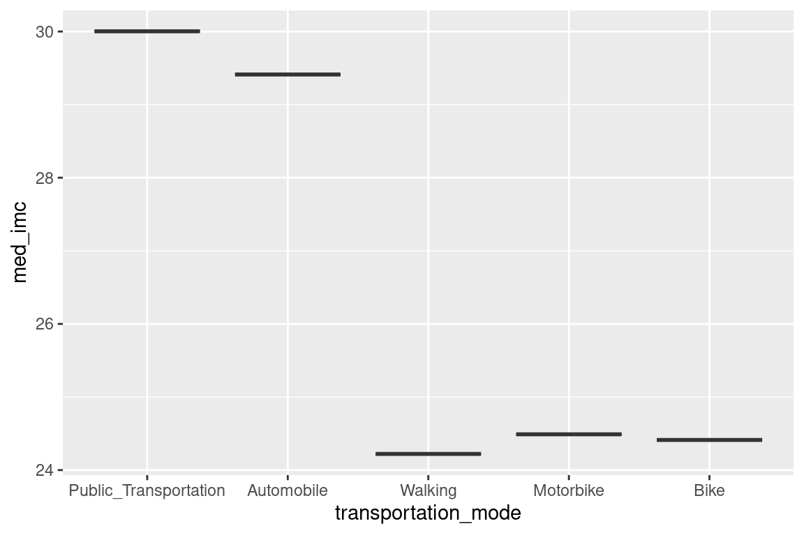